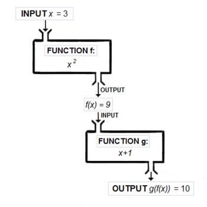

This Haskell tutorial is based on the 2016 installment of the CIS194 Haskell course at the University of Pennsylvania, and encompasses the first four lectures. What’s interesting about sessions is that they start teaching the very basics of Haskell using the CodeWorld online programming environment, so you can get started right away.
I have moved these lectures here partly because the CodeWorld API changes over time, so some of the examples on the CIS194 website stopped working. This only affects lectures 1–4, so if after working through the present document, you can right away start with lecture 5 (“Real World Haskell”). But before that, enjoy this introduction.
This material was inspired by and builds on the content of the previous installments for the CIS194 courses, held by Brent Yorgey, Richard Eisenberg and Noam Zilberstein. You can view the source on GitHub of this document, and submit improvements there.
If you happen to be mainly interested in learning to read Haskell, you might be interested in my lecture notes for “Haskell for Readers”.
1 Prelude
1.1 What is Haskell?
Haskell is a lazy, functional programming language created in the late 1980’s by a committee of academics. There were a plethora of lazy functional languages around, everyone had their favorite, and it was hard to communicate ideas. So a bunch of people got together and designed a new language, taking some of the best ideas from existing languages (and a few new ideas of their own). Haskell was born.
So what is Haskell like? Haskell is:
1.1.1 Functional
Function composition
There is no precise, accepted meaning for the term “functional”. But when we say that Haskell is a functional language, we usually have in mind two things:
Functions are first-class, that is, functions are values which can be used in exactly the same ways as any other sort of value.
The meaning of Haskell programs is centered around evaluating expressions rather than executing instructions.
Taken together, these result in an entirely different way of thinking about programming. Much of our time this semester will be spent exploring this way of thinking.
1.1.2 Pure
Not this kind of purity
Haskell expressions are always referentially transparent, that is:
No mutation! Everything (variables, data structures…) is immutable.
Expressions never have “side effects” (like updating global variables or printing to the screen).
Calling the same function with the same arguments results in the same output every time. Programs are deterministic.
This may sound crazy at this point. How is it even possible to get anything done without mutation or side effects? Well, it certainly requires a shift in thinking (if you’re used to an imperative or object-oriented paradigm). But once you’ve made the shift, there are a number of wonderful benefits:
Equational reasoning and refactoring: In Haskell one can always “replace equals by equals”, just like you learned in algebra class.
Parallelism: Evaluating expressions in parallel is easy when they are guaranteed not to affect one another.
Fewer headaches: Simply put, unrestricted effects and action-at-a-distance makes for programs that are hard to debug, maintain, and reason about.
1.1.3 Lazy
Not this kind of laziness
In Haskell, expressions are not evaluated until their results are actually needed. This is a simple decision with far-reaching consequences, which we will explore throughout the semester. Some of the consequences include:
It is easy to define a new control structure just by defining a function.
It is possible to define and work with infinite data structures.
It enables a more compositional programming style (see wholemeal programming below).
One major downside, however, is that reasoning about time and space usage becomes much more complicated!
1.1.4 Statically typed
Not this kind of static
Every Haskell expression has a type, and types are all checked at compile-time. Programs with type errors will not even compile, much less run.
1.2 Themes
Throughout this course, we will focus on three main themes.
1.2.1 Types
Static type systems can seem annoying. In fact, in languages like C++ and Java, they are annoying. But this isn’t because static type systems per se are annoying; it’s because C++ and Java’s type systems are insufficiently expressive! This semester we’ll take a close look at Haskell’s type system, which
Helps clarify thinking and express program structure
The first step in writing a Haskell program is usually to write down all the types. Because Haskell’s type system is so expressive, this is a non-trivial design step and is an immense help in clarifying one’s thinking about the program.
Serves as a form of documentation
Given an expressive type system, just looking at a function’s type tells you a lot about what the function might do and how it can be used, even before you have read a single word of written documentation.
And it goes the other way: If you are using existing code, such as a library, and you are searching for a specific functionality, you often anticipate the type of the function you need, and you can find it based on that.
Turns run-time errors into compile-time errors
It’s much better to be able to fix errors up front than to just test a lot and hope for the best. “If it compiles, it must be correct” is mostly facetious (it’s still quite possible to have errors in logic even in a type-correct program), but you are much more likely to have this experience in Haskell than in other languages.
1.2.2 Abstraction
“Don’t Repeat Yourself” is a mantra often heard in the world of programming. Also known as the “Abstraction Principle”, the idea is that nothing should be duplicated: every idea, algorithm, and piece of data should occur exactly once in your code. Taking similar pieces of code and factoring out their commonality is known as the process of abstraction.
Haskell is very good at abstraction: features like parametric polymorphism, higher-order functions, and type classes all aid in the fight against repetition. Our journey through Haskell this semester will in large part be a journey from the specific to the abstract.
1.2.3 Wholemeal programming
Another theme we will explore is wholemeal programming. A quote from Ralf Hinze:
“Functional languages excel at wholemeal programming, a term coined by Geraint Jones. Wholemeal programming means to think big: work with an entire list, rather than a sequence of elements; develop a solution space, rather than an individual solution; imagine a graph, rather than a single path. The wholemeal approach often offers new insights or provides new perspectives on a given problem. It is nicely complemented by the idea of projective programming: first solve a more general problem, then extract the interesting bits and pieces by transforming the general program into more specialised ones.”
For example, consider this pseudocode in a C/Java-ish sort of language:
This code suffers from what Richard Bird refers to as “indexitis”: it has to worry about the low-level details of iterating over an array by keeping track of a current index. It also mixes together what can more usefully be thought of as two separate operations: multiplying every item in a list by 3, and summing the results.
This semester we’ll explore the shift in thinking represented by this way of programming, and examine how and why Haskell makes it possible.
1.3 Programming environment
In this class, we start working within a programming environment called CodeWorld, which you can access at http://code.world/haskell (the /haskell is important). This has the advantages that
we can start straight away, and take care of local installation later
with the integrated support for displaying graphical output, we can have nice, visual, examples and initial tasks.
We will switch to compiling programs locally later during the course. If you want to work locally from the start, there are instructions on the course website.
2 Basic Haskell
So let us see some Haskell code. On CodeWorld, we generally start with this code (open on CodeWorld):
Most of these lines are not interesting initially, and will be understood fully later on. If we run this, using the green “Run” button, or alternatively pressing Ctrl-Enter, we see … nothing.
2.1 Declarations and variables
Not very surprising, since our picture is blank. So let us change this line to something that we can see:
What happens here? This code declares a variable with name ourPicture with type Picture (“::” is pronounced “has type”), and defines its value to be circle 1.
Note that this will be the value of ourPicture forever (at least, in this particular program). The value of ourPicture cannot be changed later.
then we get an error message complaining about Multiple declarations of ‘ourPicture’.
In Haskell, variables are not mutable boxes; they are just names for values!
Put another way, = does not denote “assignment” like it does in many other languages. Instead, = denotes definition, like it does in mathematics. That is, ourPicture = solidCircle 1 should not be read as “ourPicture gets solidCircle 1” or “assign solidCircle 1 to ourPicture”, but as “ourPicture is defined to besolidCircle 1”.
In contrast to a classical intro into Haskell, we do not start with numbers, booleans, tuples, lists and strings, but we start with pictures. These are of course library-defined (hence the import CodeWorld) and not part of “the language”. But that does not make them less interesting, and in fact, even the basic boolean type is library defined – it just happens to be the standard library.
2.2.1 Primitive pictures
Every picture is a value of type, well, Picture. We have seen two such values so far: blank and solidCircle 1. There are many more primitive pictures, for rectangles, polygons, lines, arcs and text. To get an overview, see the Help button on CodeWorld: From there you can reach the documentation of the CodeWorld API.
If we look at the documentation for solidCircle, it says
The arrow (->) indicates that solidCircle itself is a function, turning a value of type Double – i.e. a floating point number – into a picture. Now 1 happens to be a real number, therefore solidCircle 1 is a Picture.
You can see that function application in Haskell works without parentheses, you just write the argument after the function. But if the argument itself is more complex than just one number of variable name, you have to put parentheses around it:
There are two arrows! What do we make of that? This means that colored is a function expecting two arguments, namely a color and a picture, and then returns a – presumably colored – picture. There are many colors defined, so we can write
As you see, even multiple arguments are just written after the function, separated by a space, and complex arguments need to be enclosed in parentheses.
So what is the deal with two two arrows? Why not just Color Picture -> Picture? It might seem strange to you now, but there is a very deep and beautiful reason, to which we will get in a few weeks; for now you just have to take my word for it!
2.2.3 Composing Pictures
By now we are tired of seeing single circles. We want more! So we need a way to draw more than one thing. So what we are looking for is a function that takes two pictures, and combines them to one. You should agree with me that such a function likely would have type Picture -> Picture -> Picture.
And now we are experiencing one of the advantages of a good type system: We can search for a type! Indeed, there is only one function in the documentation that has this type
That is a strange name for a function, but it is indeed one name for it, and we could use (&) as a normal function, putting the arguments to its right. But, as you might have guessed, we can use & (without the parentheses) as an operator, and put it in between two pictures.
From the resulting picture we can learn a few things
The & operator combines two pictures, but puts them in the same spot, with the picture given as the left argument on top of the picture given as the right argument.
The function colored green applied only to (solidCircle 1), and not to (solidCircle 1) & solidCircle 2 (otherwise, both circles would be green). From this we deduce an important fact about Haskell syntax that you should remember well:
Function application binds tighter than any binary operators.
In order to create nicer pictures, we need to be able to place our pictures somewhere else than just the middle. For this, we use the function
Now we are getting somewhere. The parentheses around -1.5 are necessary as otherwise the compiler would think we want to use the binary subtraction operator.
Our code line got too long, so let us name some of the components and give them their own names, and while we are at it, draw a frame around our traffic light (open on CodeWorld):
We have seen how to use functions, but we also want define our own. And in a way, we have been defining functions all the time when we wrote something = this and that; this defined a function something, which just happened to not take any argument. If we want it to take any arguments, we just write give their names on the left:
A normal traffic light never shows red and green at the same time. So let us turn trafficLight into a function that shows either a green or a red light. So the argument is going to be a boolean value of type Bool, which can be either True or False. And as a matter of fact, we can write define trafficLight by handling these two cases:
We could, and we should, also write down the type of trafficLight. Not that the compiler needs us to do that – it is smart enough to figure that out by itself. But it helps us to understand the code better, to confirm that what we wrote is actually what we intended, and to narrow down bugs in the code. Conveniently, the compiler tells us about the correct signature, so we can just copy that:
Here we have applied a very important method in programming in general, and one that is even more powerful in functional programming (for reasons you will learn to appreciate later): We abstracted our code, by making the topCircle function abstract in the color, and the trafficLight function abstract in the state it is in.
2.4 Animations
Now the traffic light is green, but we want it to switch to red every now and then. The CodeWorld API not only allows us to draw drawings, but also to run animations. What is an animation? It is a picture that changes over time, where time can conveniently be understood as the number of seconds since the start of the animation.
In imperative language, one would probably have a getCurrentTime() function and call that from somewhere in our drawing generating. This is not possible nor desirable in a pure functional language, as it would be a hidden side effect. Instead, the time is provided as a parameter.
So here this codes makes the traffic light switch every three seconds:
Instead of drawingOf we use animationOf in the main entry point of the program. Its parameter is no longer simply a value of type Picture, but rather a function of type Double -> Picture. This function will be given the current time, and return the picture for that time.
We again define a function by multiple cases, but this time using a guard to select the case. When called, the conditions of the guards are tried in that order until one evaluates to True. Then this code is taken.
otherwise happens to be a defined to be True. It just reads better than writing True here.
There is a function called round and mod. round is used in the normal, prefix way, but we turned mod into an operator by putting backticks around it (`mod`). You can do that two any function called with two arguments.
We are now working with numbers here, so let us take a quick detour into Haskell’s numeric types.
2.5 Numerical Types
There are three number-related types we should know about for now: Int, Integer and Double.
Ints are guaranteed by the Haskell language standard to accommodate values at least up to \(\pm 2^{29}\), but the exact size depends on your architecture. For example, on my 64-bit machine the range is \(\pm 2^{63}\).
The Integer type, on the other hand, is limited only by the amount of memory on your machine.
There is also a single-precision floating point number type, Float, in case you wonder.
Together with these functions, there are a bunch of operations, as you would expect:
(+), (-) and (*) work for all numerical types.
(If you see Num a => in front of a type in the documentation or in the output of http://tryhaskell.org/ or your local interpreter session, just read that as “a is one of the numerical types” for now).
(/) only works for Double
For integer division, there is div and mod.
The usual functions like sin, cos, log, sqrt etc. all exist.
You cannot mix different types in the same operation, e.g. you cannot directly add d1 + i. If you want to do that, you have to explicitly convert
fromIntegral: converts from any integral type (Int or Integer) to any other numeric type.
round, floor, ceiling: convert floating-point numbers to Int or Integer.
If you are used to other languages which do implicit conversion of numeric types, this can all seem rather prudish and annoying at first. However, I promise you’ll get used to it – and in time you may even come to appreciate it. Implicit numeric conversion encourages sloppy thinking about numeric code.
In the code above, we also used (==). This compares two values of the same type for equality. It does work on most types (more on that later). It even works on floating point numbers, but really, it should not be used there (why? see this article). The test for inequality is (/=).
There is also (<), (>), (<=), (>=) for comparisons and min and max to take the minimum or maximum of two values.
3 Recursion
The last topic for today is recursion. Recursion is when a function calls itself again. Or, more general, if multiple functions call each other.
Recursion is, like abstraction, a very powerful method in functional programming and once you are done with this course, thinking about recursion is going to be the most natural thing in the world.
So lets say we want to put multiple traffic lights next to each other. We could do it this way (open on CodeWorld):
The function lights is again defined over multiple cases, by pattern-matching on the number of lights to draw. If we should draw no light, we do not draw anything. Otherwise, we draw one light, and the remaining lights shifted to the right.
This is a typical form of recursion: We have a base case, which does not itself use the recursive function any more, and we have the recursive cases, which do.
What happens if I try to draw lights (-1)? What if I swap the arguments to (&)?
Of course, there is a lot of logic involved in lights that that is not specific to traffic lights, so this does call out for some abstraction. We will abstract out both the picture to draw, and how far we shift to the right in every step (open on CodeWorld):
Side remark: With this code, the compiler warns about unused variables pic and dx. This is a helpful warning, as more often than not if you do not use a value that you named, then that is a bug. If it is not, like in this case, replace the binding by _, indicating that you do not want to name this parameter.
A recursive function may call itself more than once, and this allows for nice drawings (open on CodeWorld):
We will get to the meaning of the lists with brackets and the pairs with parentheses next lesson, for now just consider this a way of drawing a line from one point to another.
(Do you want to see the tree folding and unfolding? Requires only minor changes to the code… check out this animation.)
4 Code Comments
Not very exciting, but good to know: You can have comments in Haskell code in one of two formats:
GHC’s error messages can be rather long and (seemingly) scary. However, usually they’re long not because they are obscure, but because they contain a lot of useful information! Here’s an example:
Prelude> 'x' ++ "foo"
<interactive>:1:1:
Couldn't match expected type `[a0]' with actual type `Char'
In the first argument of `(++)', namely 'x'
In the expression: 'x' ++ "foo"
In an equation for `it': it = 'x' ++ "foo"
First we are told “Couldn’t match expected type [a0] with actual type Char”. This means that something was expected to have a list type, but actually had type Char. What something? The next line tells us: it’s the first argument of (++) which is at fault, namely, 'x'. The next lines go on to give us a bit more context. Now we can see what the problem is: clearly 'x' has type Char, as the first line said. Why would it be expected to have a list type? Well, because it is used as an argument to (++), which takes a list as its first argument.
When you get a huge error message, resist your initial impulse to run away; take a deep breath; and read it carefully. You won’t necessarily understand the entire thing, but you will probably learn a lot, and you may just get enough information to figure out what the problem is.
6 ✍️ Exercises
When solving the exercises, strive to create not just code that works, but code that is stylish and concise. Try to write small functions which perform just a single task, and then combine those smaller pieces to create more complex functions. Don’t repeat yourself: write one function for each logical task, and reuse functions as necessary.
In these exercises, you will be creating lots of drawing and animations. The exercises will describe what you have to do, and maybe give an (simple) example, but you are always welcome to make it prettier and more shiny. This is all good as long as you do not simplify the task this way, or make the code too convoluted. Extra effort in that direction contributes towards your participation score.
Make the tree bloom! Create an animation that looks like the dire tree 8 initially, and then grows blossoms at the end of each twig within 10 seconds. After 10 seconds, the tree should be in full bloom and the animation should stop.
A bloom could be a yellow circle growing in size, or something more intricate with petals and better colors and whatnot.
In your code, modify tree to be abstract in the actual shape of the blossoms. This way, the tree function itself is independent of time. Do not pass the time parameter to the tree function!
The result could look like this:
6.3 Sokoban tiles
Until the end of the tutorial, you will implement a game of Sokoban. The rules are simple (quoted from https://en.wikipedia.org/wiki/Sokoban, which also contains a nice animation that you can look at):
The game is played on a board of squares, where each square is a floor or a wall. Some floor squares contain boxes, and some floor squares are marked as storage locations.
The player is confined to the board, and may move horizontally or vertically onto empty squares (never through walls or boxes). The player can also move into a box, which pushes it into the square beyond. Boxes may not be pushed into other boxes or walls, and they cannot be pulled. The puzzle is solved when all boxes are at storage locations.
We do some preparations this week. In particular, we need the different squares that may occur:
Walls
Ground, i.e. empty spaces
Ground marked as storage
Boxes
After this exercise, we will have the necessary code to draw a sokoban level. You can use this code to get started.
Create a functions wall, ground, storage and box of type Picture, which draw the corresponding thing, with a width and height of 1 and positioned at the center of the picture.
The example picture below is very much on the dull side. Make it prettier! You can search for screenshots of the real game for inspiration.
Create a function drawTile :: Integer -> Picture that draws a tile according to the given number2, according to the above list. If the argument is not one of these four numbers, it should not draw anything (but should also not crash).
A maze can be represented as a function with the type Integer -> Integer -> Integer, which, given two coordinates, returns the kind of tile to be present there.
For now, we have one such maze, with the creative name maze:
which will, for every coordinate (x, y) with x, y ∈ − 10, …, 10, uses the maze above to determine what tile to place there, uses drawTile to draw that tile, translated into the right spot.
Of course, do not hard-code 441 invocations of drawTile into your program! Instead, use recursion to traverse the positions in the grid. You will likely need one recursive function to draw one row after another, which in turn calls a second recursive function, which then draw each element in that row.
Define main to be drawing of pictureOfMaze.
The result could look like this:
7 Higher Order Functions
The solution for the maze-drawing exercise might have been solved with this code, which draws a row and then draws a column:
Clearly there is some repetition going on here, with drawRows and drawCols doing very similar things. In prose, what they are doing is “21 times, do something similar each time, but varying with the count”. They differ in two aspects:
The “something” is different: it is calling drawCols in the one case, and drawTileAt in the other case.
For drawCols, there is an extra argument that is passed around to the “something”.
I promised that Haskell is a language with good abstractions, so it should be possible to abstract over this pattern. So lets give it a try:
Now we are stuck: In the definition of drawCol, we need to know the current row and column number, but we do not have that! If we would write n (which maybe a Perl programmer from the last century would try here), we would get an error about a variable being not in scope. And even if we somehow could access the n there, which one would it be – draw21times is run twice here!
So the helper needs to pass down the n to something. And similarly, drawRow has to tell drawCol what row it is part of:
Nice, so this works. But what exactly have we done here? Let us clarify things by adding type signatures, conveniently provided to us by the CodeWorld interface:
Now that is a mouthful. We’ll skip the details for now, but simply follow the heuristics that Num a says that a is a numeric type, so we just use Integer, and similarly for the other functions:
The type signature of draw21times again has two arrows, but it does not take two arguments! The parenthesis around the first argument are important: This means that there is one argument, which happens to be a function, which itself takes one argument.
Similarly, the type signature of helper says that there are two arguments, the first being a function taking one argument, and the second being simply an Integer.
The types of drawRow and drawCol are again straight-forward function types. Note that the type of drawRow is precisely the type of the argument to draw21times – and therefore we can pass drawRow as an argument to draw21times.
What you see here is an instance of an Higher Order Function, i.e. a function that takes other functions as arguments. It is a central idea in functional programming and one main reason for the great abstraction possibilities in Haskell.
7.1 Partial application
There is something odd about the use of drawCol here. It seems that drawCol is a function of two parameters, but we use it with only one parameter, as an argument to draw21times. How can that work?
To understand that, let me write the type signature of drawCol differently:
This suddenly changes the perspective: Now drawCol is a function taking one argument, and returning another function, which again takes one argument. And this returned function nicely fits the argument type of draw21times.
But it really is just a change of perspective. The two types are identical. In this sense, every function in Haskell takes one argument – it is just that some return a function.
You can also understand that from looking at a function call. The expression f x y is equivalent to (f x) y.
We note that the function type arrow is right associative and function application is left associative.
7.2 Local definitions
Let us clean up the code a bit. First of all, the definition drawCol r c = drawTileAt r c looks quite useless. All it says is that “using drawCol is equivalent to using drawTileAt”. So let us remove drawCol.
The next code smell is the helper function. It really is a helper to draw21times, so it would be nice to have this function only available within draw21times. To do so, we use local definitions. They come in two varieties:
A let-binding contains definitions for functions and values, quite like top-level definitions. It can contain multiple definitions, and makes them available to both the definitions it contains, as well as to the expression after the in. The let-construct is a self-contained expression and can be used wherever any other expression is expected.
This is just a syntactic variation, and equivalent to the code above. One or more definitions can follow the where, and are available to those definitions and the body of the function.
It is a matter of style which ones to use. Generally, where clauses are prettier, require less indentation and are almost always used for local functions. They also have the advantage of scoping over multiple guards. For local values (e.g. some computation), a let clause can also work well. You’ll get the hang of it.
A more common name for such a local definition is simply go. It is ok to use such a non-descript name, because its scope is so small and clearly defined. Also, type signatures for such local definitions are often omitted.
7.3 Captured variables
Making go a local function and moving it into draw21times has another advantage: It can reference the parameters of draw21times. Currently, go goes through quite some lengths to pass the something parameter around. But that is no longer necessary: It can simply refer to something as it is bound by draw21times:
By now you might have noticed that indentation seems to be significant in Haskell – how else would you know where the where clause ends. Indeed, like Python, but unlike most other programming languages, Haskell is indentation sensitive. This has two advantages:
There is no need for delimiters like curly braces etc, which makes the code cleaner and easier to read.
It ensures that the programmer writes properly indented code.
The indentation rules are somewhat technical, so I will not explain them here. Instead, I appeal to intuition: From the examples given in class and the exercises, you will soon get an intuition about how that works, and that will be sufficient. In fact, I myself cannot give you the exact rules, but I have not had a problem with indentation since many years.
If it does not work: Experiment. If you are stuck: Ask (e.g. on Piazza).
If you really want to know the rules start with the chapter on indentation in the Wikibook on Haskell.
7.5 Lambda expressions
We have now seen already three way of defining a function: Global, in a let or in an where clause. The form of the definition has always been the same, though, and all of them required giving a name to the thing.
Giving a name is not always desired. Naming things is hard! Therefore, at least for very small functions that are used only once, it is desirable to just define them on the spot where they are used.
Consider the drawRow function: All it does is to call draw21times with drawTileAt as its argument. That is hardly worth giving a name, writing a type signature and so on.
So instead of using drawRow, we can define this functionality right on the spot in pictureOfMaze:
The backslash is a poor rendering of the Greek letter λ (lambda), and indicates that this defines an anonymous, local function, which, when called, takes one parameter r, and returns the stuff after the right arrow, i.e. draw21times (drawTileAt r).
We could use it twice to make it a bit clearer what this code does, by naming the variables for the row and the column appropriately, and also showing the symmetry:
On to the next topic, and again we will motivate and introduce it by addressing some wart in the code from the last set of exercises.
The functions drawTile and maze designate the different types of tiles by a number. That calls for trouble: It is easy to mix them up, extending the list of tiles is error-prone, as you might forget to extend the code somewhere else that handles the numbers.
The problem is that Integers are not a a suitable type to represent tiles: There are too many of them, and their meaning is implicit.
So we want a type that is tight, i.e. large enough to encompass all tiles we want to represent, but no more, and explicit, i.e. the meaning of a value of such a type is clear.
The keyword is data, followed by the name of the new type, followed by an equals sign, followed by a list of constructors of this type, separated by bars. Type and constructor names always start with a capital letter, and they each have their own namespace (so you can use the same name for a type and a constructor).
The new type Tile now consists of exactly these five constructors as values, no more and no less. So the type is tight. And further more, every value is self-explanatory.
We can return them in maze, and pattern match in drawTile, just like with numbers (open on CodeWorld):
Note how suddenly the type signature of drawTile and especially of maze has become much more helpful!
8.1 Booleans
You have actually used such a datatype before, in last week’s class: We were using the type Bool, with its values True and False. And it may come as a surprise to you that this type is defined using the very same mechanism that you just leaned:
It is a sign of good programming language design if many concepts can be implemented using the language itself, instead of having to be built in.
The same then holds for operators like (||) and (&&) – there is nothing special about them, and you could have defined them yourself. (Try to come up with their definition, and then compare it against the real one!)
The type is still somewhat privileged though, because guards, like the one in maze, need to be expressions of type Bool. But that’s just a use of the type, not the definition of the type.
8.2 More data types for Sokoban
Let us work towards making our animation interactive. To start with, we might want to move the maze around, using the keyboard, in case it is larger than our screen (or just as a preparation for moving the player around).
To that end, let us first talk about the types involved. It makes sense to have one type that describes the possible ways to interact with the system. For now, the only interaction is moving the view into one of the four directions, so we can define a data type for that:
We also need to keep track of the current position, after a few key presses. Now, there are infinitely many possible positions, so a simple enumeration does not cut it. We could describe the position with two integer numbers, so we need a type that stores two such numbers. We can do that also using the data keyword, and giving the parameters to the constructor:
Here I define the type Coord. There is a single constructor to created this type, called C, which takes two Integers and turns them into one Coord.
Just like above, the constructors are value we can use in expressions, we can do this with C, which is a function of type Integer -> Integer -> Coord.
If you like math-talk: The type Coord is now isomorphic to the product type of Integer with Integer, and C is an isomorphism between them. If follows that constructors are always injective, and if that does not mean anything to you right now, you can ignore this.
So it is straight forward to create a Coord (just use the constructor as a function). How do we use a Coord? This works by pattern matching. We will need a function that translates a picture to have its origin at a given coordinate. Let us write it, first thinking about the type and then the code:
So when we pattern match against a constructor with parameters, we simply give names to the parameters. We have to put parentheses around this, to distinguish it from multiple function parameters – this applies consistently in pattern just as well as in expressions.
(The fromIntegral is needed to convert the Integer to a Double. Why did we not put Double in the type of Coord in the first place? Because Integer is more honest: If we just use the keyboard, there will never be non-integral coordinates there.)
The next function that we will want to write is one that calculates a new coordinate, based on the current coordinate and a direction.
Time to put these thing to good use. The goal is as follows: The maze should be centered when we start the program. Then we can use the arrow keys to move it around. We have already implemented most functionality for that, but you might wonder: How can we have interaction in a world without side-effects? How can we remember the current state in a world without mutable variables?
Well, we solved such a riddle before, when we implemented an animation, by modeling our thoughts in terms of pure functions, and then having some “machinery” that executes our pure functions, yielding the desired effect. We can do it again.
An interactive program changes state whenever a new input event happens. If we want to separate the logic of the state change from the logic of remembering the current state, the former becomes a pure function again, namely one that, given the input event and the current state, calculates the new state. Additionally, we need to specify the initial state, and then of course how to visualize the state.
9.1 Interaction on CodeWorld
This functionality is provided in CodeWorld by the following function, which has quite a large type signature:
Its type signature mentions the type world. This is not a specific type, but rather a type variable. We’ll get to that later; all we need to know for now is that this type can be any type we want it to be. This type contains the state of the program. In our case, it is simply a Coord.
The function activityOf takes three arguments:
An initial state.
A function modifying the state if a certain event has happened. An event is either some action by the user, or simply the passing of time.
A function to draw a picture according to the current state.
Let us try to use this function, in a simple way, where we simply move the maze up on each event (open on CodeWorld):
There are seven constructors, for different kind of events. We care about KeyPress events. This constructor has an argument, which is a Text. We have not seen this type before, but we can guess what it means. So let us handle this (open on CodeWorld):
From now on, make sure you have the line {-# LANGUAGE OverloadedStrings #-} at the very top of your file, or you will get strange error messages.
And there we go, we can move the maze around! (You might have to click on the embedded picture before it reacts to your key presses.)
9.3 Some terminology
A data type where none of the constructors has parameters is called an enumeration type.
A data type with exactly one constructor is called a product type.
A data type with multiple constructors is called a sum type.
A data type with no constructors is an empty type. Yes, that is a thing. Yes, this is sometimes useful.
With that knowledge (and some cleverness) you should already be able to write a fully functional Sokoban, although we will use the next set of exercises for some more preliminaries, and then learn a bit more that will help us finish the game.
10 ✍️ Exercises
You are free to use the code from above and from your own solutions to the first set of exercises. Some of the exercises below reference types and functions from there. In particular, if you have nicely drawn tiles, you should use them instead of my ugly ones.
You learned about local definitions and lambda expressions. Use them when appropriate!
10.1 The small guy (or girl) moves
We hope to have a complete game soon, so let us work towards that.
Create a value player :: Picture that draws your figure.
Create a value main :: IO () that calls activityOf with suitable arguments that:
the player is drawn on top of the maze,
it starts in a position where there is ground (you can hard-code that position),
the cursor keys move the figure around (while the maze stays in a fixed position),
the player moves only on tiles of type Ground and Storage. Trying to move it into any other position will simply leave it in place.
It might yield nicer code to change the type of maze to Coord -> Tile. If you find that, do not hesitate to make that change.
10.2 Look the right way!
This is a continuation of the previous exercise. We want the figure to look the way it is going. So change the type of player to player :: Direction -> Picture that draws the figure in four variants.
Then extend the code from above so that after the player has tried to move in some direction, it looks that way.
Hint: Think about types first (e.g of your state), and then about the implementation.
10.3 Reset!
It would be nice to be able to start a game from the beginning. This is generally useful functionality, no matter what the game, so let us implement it generally.
This function will behave almost the same as activityOf (which it internally uses, of course), but when Esc is pressed, this event is not passed on, but rather the state of the program is reset to the given initial state.
Style hint: An idiomatic definition of resetableActivityOf does not require any other top-level definitions, but likely local functions and/or lambda expressions.
Let exercise3 be like exercise2, but using resetableActivityOf instead of activityOf.
10.4 New level (optional)
Create your own maze. It should
fit within the screen (i.e. use coordinates from -10 to 10),
it should be connected (i.e. starting on a ground tile, and disregarding boxes, the player should be able to reach all ground tiles),
it should be closed (i.e. the player should not be able to reach blank tiles), and
it should be solvable (recollect the rules if necessary).
11 Polymorphism
Now, we will explore how polymorphism allows for yet more abstract and compositional thinking, and how to apply wholemeal programming.
Polymorphism is a property of a function that it can work with any type. We have seen this in the type signature of activityOf:
This function is polymorphic because the type world is arbitrary, and can be chosen by the caller. We did that in last week’s class when we instantiated with Coord, and you did it again in the homework, using your custom State type.
11.1 Parametricity
It is important to keep in mind that the caller picks the type. Therefore, the implementation has to be able to handle any possible type. And since in Haskell you cannot make decisions based on the type of an argument (only on the value of the argument), this implies that Haskell is parametric: Polymorphic code behaves “the same” for any type that you pass it to.
Why is parametricity important?
It makes type erasure possible. Type erasure means that no information about the type of values is present at run-time. The compiler erases the types from your program as it compiles it to machine code. The benefit is that he code runs much faster than, say, Python code, where type information needs to be carried around and inspected at run-time.
It restricts what polymorphic functions can do. Consider the following type signature:
We do not see its implementation. What can we say about it?
It will have to return a value of type a, in a way that works for every possible type. So it cannot return 3, it cannot return True. The only value of type a that it has access to is its parameter. So the only sensible definition of this function is
which takes two arguments: a function, and a value, again of some type that riddle2 cannot know anything about. We can again wonder: What values of type a can riddle2 return? Well, it can return its second argument. Or it can apply its first argument (the function) to the second argument. Or it can apply it twice… so there are many possible riddle2 implementations, but we still can tell a lot about them from the type signature:
But this function will send the program into a infinite loop. The above observations are true for total functions, i.e. functions that always return. Haskell does allow for partial functions (i.e. functions that go into an infinite loop, or that throw an exception).
11.2 Polymorphic Data Types
Not only functions can be polymorphic, but also data types. Let us motivate that by an example.
In last week’s homework (example solution), we created a variant of activityOf that would allow the game to be reset (and it was indeed polymorphic). Let us do something similar and create a variant of activityOf that would initially show a startup-screen, and start the game proper only when the space key is pressed.
In order to implement this functionality, we need, in the state, remember whether we are showing the start screen, or whether we are already playing the game. But the type of startScreenActivityOf (which is the same as activityOf) needs to be polymorphic in the state! We do not know what kind of state is used for the interaction we are wrapping, so we cannot use it to find out whether we are showing the start screen or not!
So we need to define our own state data type. And clearly, it is in one of two states: It is either showing the start screen, or the game is running, in which case we need to hold the game’s state. We can define a data type that does that:
It was easy to write down the code, because we can program in a type-driven manner: With the type of the local functions in mind, we could simply program by cases. Every case on its own is rather obvious, and once we handled all the cases, we have a working program. (Open on CodeWorld)
11.3 Wholemeal interactions
We now have this nice start screen, so it is a bit unfortunate that once we start the game, we cannot go back and see it again. So we really would want to combine this functionality with the reset functionality that we did in last week’s homework. But we can’t! Both these generic interaction-modifiers produce complete programs, there is no way to apply one to the other.
Surely, we can do better.
Imagine we had a type Activity that captures everything about an activity. What if we then also had functions
It is possible to define such a type Activity. Can you imagine how?
An interaction is defined by a state type, and by the three parameters that we so far have passed to activityOf. So let us not pass them to activityOf, but rather store them in a datatype:
Because of the type variable world, the type signatures of resetable and withStartScreen are a bit more complicated. We can use type inference to let the compiler figure it out for us, though.
Changing the existing functions startScreenActivityOf to withStartScreen, and resetableActivityOf to resetable turns out to be trivial: Just replace the three parameters by one, pattern matching on Activity, and replace the use of activityOf with the constructor Activity:
The function runActivity is also very simply to write: We just pattern match on Activity to get our hands on the individual functions, and pass them to activityOf:
Think about what happens if we switch the order of resetable and withStartScreen!
12 Recursive data types
An important concept that you will need in more complex programs (such as a proper Sokoban implementation) is recursive datatypes. These can be used to implement lists and trees and many other data structures.
In our game, the boxes will have to be moved around. It is likely that we will want to manage a list of coordinates of these boxes, and clearly, this is going to be part of our state.
Our code should work with any number of boxes (as various levels have various number of boxes). What type is suitable to store any number of coordinates? Or – as you would expect after we talked about polymorphism – any number of values of some arbitrary type?
12.0.1 Lists
Of course, the standard library comes with a suitable data type, but let us, for the sake of learning, define it ourselves. Just like we used recursion in functions to replace loops, we can use recursion in types to implement lists:
So a value of type List a is either the constructor Empty, or there is a list entry, which is a value of type a, and then the remainder of the list, i.e. another value of type List a.
We can define a value of that type, by using the constructors, as you would expect:
Now, what if we want to draw all boxes in the list? We would also start by pattern-matching on the list, handle the empty case, and handle one entry, and then recurse on the remaining list (open on CodeWorld):
We observe that the recursion on the value level (in the function pictureOfBoxes) corresponds to the recursion on the type level (in the type List). This is a common idiom.
Let us make this interactive again: We want to use the arrow keys to move all boxes. Here is one way of doing that:
This works! But we are not satisfied. The function moveAllBoxes does a bit too much for my taste: We there have the logic of both moving a single box and traversing the list. Can we separate them? Sure we can, using higher order functions!
12.0.2 mapList
We start by writing a very general apply-a-function-to-every-element-in-a-list function:
What do you think is the type signature of mapList?
12.0.3 combine
The function mapList is very useful, and you will most likely want to use it in your code. In fact, it is generally recommended to use such general higher-order functions instead of writing out an explicit recursion.
Where can we do a similar refactoring? In the function pictureOfBoxes! This function also perform two things that can be separated into smaller, more generally useful parts: For every entry in the list, it creates a Picture, and then it combines all these. So how about this:
Granted, the code did not get much smaller. But we did gain a generally useful combine function. (Open on CodeWorld)
13 Case expressions
Finally, a small syntactic gimmick, that you might find useful when doing the homework.
So far, the only place where we can do pattern matching is when we define a function. This is sufficient, but sometimes annoying, as it requires local functions that we might want to do without.
So let us say we want to remove all boxes from the maze. We could write it like this:
The syntax is the keyword case, followed by the expression that we want to analyze (also called the scrutinee), then keyword of, and then, vertically aligned, any number of alternatives. The alternatives consist of a pattern, just like in a function equation, an arrow, and the expression this should evaluate to in case the pattern matches. Even guards can be used here!
14 ✍️ Exercises: Build Sokoban
The goal of this set of exercises is simply: Implement Sokoban!
In order to guide you through the process, and also to make partial grading possible, we will break it down into smaller steps.
You can start from this template code. It already includes type signatures for some of the functions described below. Make sure you adjust everything defined to be undefined or marked as FIXME. Use your solutions to previous exercises where appropriate (i.e. your custom maze, tiles and player).
14.1 Step 1: The state
Define a data type State that capture the state of the game. It needs to store these pieces of information:
The current position of the player.
The direction the player is facing.
The current positions of all boxes, as a List.
14.2 Step 2: The initial state
Define a value initialState :: State for the initial state:
Manually define a sensible position for the player (i.e. on some Ground tile).
Use an arbitrary direction.
Find where the boxes are.
The latter is a bit tricky: The information is there (in the definition of maze), but not very accessible. Do not just write down the list of coordinates by hand! Instead, define a value initialBoxes :: List Coord that is calculated from looking at each coordinate (going from -10 to 10, as usual), and adding that coordinate to the list if there is a box.
There are two ways of doing that. Pick one (but try to understand both):
which appends two lists. Then you can implement initialBoxes similar to pictureOfMaze, using appendList instead of (&).
This is called folding appendList over the set of coordinate.
Alternatively, in your recursions that traverse the coordinate space, pass a list down as a parameter. Initially, this list is Empty. If the current coordinate is not a Box, you simply pass it on. If the current coordinate is a box, you add an Entry to the list, and pass the extended list on.
which behaves like noBoxMaze for every coordinate that is not in the list, but returns Box if queried for a coordinate that is in the given list of coordinates.
It will be useful (also below) to define a function
React to the arrow keys only. Such an event can either succeed or fail.
It succeeds if the tile moved to is either Ground or Storage or Box. If it is Box, the next tile in that direction has to be Ground or Storage. It fails otherwise.
If the move succeeds, update the state with the new position of the player, the direction he walked to, and the updated position of the boxes.
Hint (you can do it differently if you want): To update the position of the boxes, define a function
that takes a position to move from, a position to move to, and the coordinate to adjust. If the first parameter matches the third, return the second, otherwise the third. You can use this function with mapList to update the whole list of coordinates. This conveniently does the right thing (i.e. nothing) if no box is pushed, and does the right thing with boxes that are not pushed. Do not worry about efficiency here.
If the move fails, update only the direction the player.
14.6 Step 6: Putting it all together
Define an Interaction based on the functions you defined in the previous steps. Wrap it in resetable and withStartScreen, so that pressing the escape key returns to the start screen.
It should now behave roughly like this:
14.7 Step 7: Winning
One bit is missing: If the game has been won, you need to say so, and further interaction should stop.
which returns true if all entries in the list are True, and False otherwise. If given an empty list it should also return True.
You can implement isWon using these two functions and mapList.
Use isWon in two places:
In draw, if the game is won, write You won! or something similar across the drawn picture of the game.
In handleEvent, if the game is won, ignore all events (i.e. return the state unaltered)
The final game should now behave like this:
15 Type classes
In the last set of exercises, you have developed a working implementation of Sokoban. The resulting code might look like this example solution.
While implementing it, some of you might have wished to be able to use the equality operator ((==)) on your own data types, such as Coord or Tile. But you could not and had to work around it using case expressions, helper functions or functions like eqCoord.
But you may have already observed that (==) can be used with multiple types: Integer, Double, Bool (although you should not use it with Double!). And I claimed that Bool is not special. So there must be a way of using (==) with, say, Coord.
Maybe the error message that we see if we try to use it, can shed some light on this:
No instance for (Eq Coord) arising from a use of ‘==’
It seems that we need some kind of instance. Before we talk about instances, though, we have to talk about classes.
You can use the Hoogle search engine to search for ==, and the first entry will tell you about the type of the (==) operator:
Prelude> :t (==)
(==) :: Eq a => a -> a -> Bool
On the right of the => arrow, we have the function type that we know: The operator takes two arguments of some type, and returns a boolean. On the left of the => arrow, we have a type class constraint. This says that (==) can only be used on types that are members of this type class.
15.1 The Eq type class
If you click on that link, you’ll reach the the documentation of the Eq class. Among other things, you’ll learn about the type class head, namely
class Eq a where
and its methods, namely
(==) :: a -> a -> Bool
(/=) :: a -> a -> Bool
The documentation obscures this a bit, but if you put the two code snippets above together you get what you would write to define such a class yourself.
Note that methods are given with just their type signature – the implementation will be in the class instances. Also, the type is given without the Eq constraint that you saw in the type signature for (==) earlier; this is added automatically.
The documentation also shows that there are many many instances for this class:
So after the instance keyword, we name the type class that we want to instantiate and the type for which we want to define an instance. Then, after where and indented, we give function definitions for the methods. We can use multiple patterns, guards, and all that as usual. We do not give a type signature, because the type of these methods is already determined by the class definition and the instance head.
Now our code compiles again.
15.3 Default implementations
Note that I was lazy and did not really implement (/=); I just referred to the implementation of (==). Obviously, that is fair game for every instance of Eq that one might want to implement.
Therefore, the Eq class already comes with a default implementation of (/=) in terms of (==) and we can simply skip the definition in our code.
How do we know that we can leave out (/=)? We can try (the compiler will warn us about missing instances), or we can check out the documentation or the source (which are a bit harder to find for Eq because it is so basic).
By making a function a method of the class with an default implementation, the authors of an instance have the option of implementing it (for example if a more efficient implementation is possible), but they do not have to.
15.4 The Eq Tile instance
So great: We can now use == on Coords. We also want it on Tiles. That is easy to write:
Now that works, but I am sure you can immediately tell me why this is not satisfying: That is a lot of code to write, it is repetitive, and if we add another constructor to Tile, the code will be wrong.
Luckily, at least for some of the basic type classes, the compiler can write the instance for us. We just have to instruct it to:
(If are are playing around with this locally, then pass -ddump-deriv to the compiler to see that it actually creates the same code that we wrote above.)
15.5 Equality is not for everyone
So great, we get to use (==) on all our types! All our types? Unfortunately not. Last week we defined the type Activity. Some fields of this data type are functions, and equality on functions is, in general, undecidable. If we tried to use deriving Eq on Activity, we would get the error message
No instance for (Eq (world -> Picture))
15.6 Benefits of type classes
So great, we get to use (==) on almost all our types! This is also called overloading, and is a nice feature of type classes, but not the only and probably not the most important one. The important features are:
15.6.1 Overloading of names
As just discussed.
15.6.2 Laws!
When you see (==) and (/=), you immediately assume that a /= b is True if and only if a == b is False. By convention, every instance of (==) fulfills this law, and the derived instances do as well. For other type classes, the laws are more interesting, but that is a topic for some other time.
Note that such laws are not checked by the compiler (it cannot do that, in general), and nothing is stopping you from implementing a bogus instance. But if you do, do not complain if things break in weird ways.
There is nothing Coord-specific going on any more! And indeed, if we remove the type signature, and let the compiler propose one to us, we get the suggestion to write
This means that moveFromTo is a very generally usable function. We only write it once and can use it with many different types.
Now, this function is not very impressive, but we can implement very complex functionality in a generic and reusable way this way, especially when the type class in question comes with laws (see above).
15.6.4 Instance resolution
When using overloaded functions, the compiler has to find the relevant instance for the type you are using it. With polymorphic types, this instance might require another one (as we will see shortly). With some trickery and/or some language extensions supported by GHC this instance resolution process can be a powerful machinery that not only relieves you from writing some tedious code, but can actually solve some puzzling problems for you. In a way, it is a small logic programming language embedded in the type system.
I will demonstrate this in a moment, but let’s continue with the general remarks first.
15.6.5 Coherence
Haskell guarantees that for a particular type and a particular type class, there is at most one instance. If we would try to define instance Eq Coord again, the compiler will bark at us.
This means that the meaning of an overloaded function depends only on the concrete type it is used with, but not in what context it is used. This is used by the library implementation of search trees, which uses the Ord instance of the type of keys to build the tree, and this would go horribly wrong if you build the tree with one particular ordering, and then search in it using a completely different ordering.
15.7 Use case: Undo stacks
Let us demonstrate how we can make use of instance resolution, by implementing generic undo functionality. When testing your solution, you surely moved your box onto the wall and wished you did not have to start over again. So let us implement this, in generic way, as a Activity-modifying function:
This code (open on CodeWorld) looks good, but if we we use it (by using withUndo in main), it does not seem to work. What went wrong?
The problem is that we push the state to the stack on every event. That includes mouse moves, that includes button releases. What we really would like to do is push a change only on to the stack if the event actually had an effect!
So we need to check that in the handle' function, before we push a new state onto the stack:
which makes sense: In order to compare the state of the interaction we are wrapping, the state needs to be comparable! So we have to extend the type signature:
No instance for (Eq State) arising from a use of ‘withUndo’
We have not yet defined an Eq instance for State! But we know how to do that quickly: Using deriving Eq. This will, as one might expect, also ask for Eq instances for Direction and List, which we give the same way.
Now what if we swap the use of withUndo and withStartScreen? We get an error message saying
No instance for (Eq (SSState State))
So we should give an Eq instance for SSState. We could use deriving, but lets do it by hand to learn something.
We have introduced withStartScreen, and hence SSState, to be polymorphic and work with any possible wrapped state. So likewise, we do not want to write an instance just for SSState State, but rather SSState s for any type s. So lets write that:
This makes sense: If the underlying state type does not support equality, then the extended type cannot do it either. But where do we add the constraint that this Eq instance does only work if s itself is a member of the Eq typeclass? We add this to the instance head:
This works, and now pressing U gets us back to the start screen. (Try it on codeworld).
What is happening here? As we compose functions that transform Activitys, the type of the state of these interactions grows. And then, when there is a function like withUndo that has an Eq constraint, the compiler uses the existing instances of Eq to break this complex type down again, and this way constructs, on the spot, a way to equate values of this complex type.
Naturally, this example has been very small, but I hope it gave you an impression at what might be possible.
Question: Are there other designs that do not require an explicit equality check to implement undo? Which one would you prefer?
15.8 Type classes vs. object-oriented classes
Many of you might have experience with object-oriented programming languages like Java. You are in danger! Do not fall in the trap of confusing type classes (in Haskell) with classes (in Java)! They are not very similar, and you do not use them to solve the same problems.
If anything, type classes correspond to interfaces in Java: Both contain methods without implementation and their type signatures, and instances provide the implementation.
Classes and objects as in Java do not have a direct correspondence in Haskell, and that is ok, because problems are approached differently. But the Activity type that we defined above week is, in some sense, an approximation of a class. The concrete Activitys that we defined are instances of this class, and functions like withStartScreen relate to inheritance (or maybe to the decorator pattern).
15.9 Other type classes you should know about
Besides Eq, you should know about these type classes:
Ord, with methods like (<=), min and others, for types that can be (totally) ordered. Can be derived.
Many numeric type classes:
Num, with methods like (+), (*), abs and fromInteger, for basic numeric types. Speaking mathematically, this type class captures the operations of a ring. Instances for Int, Integer, Double and others.
Integral with methods like div and mod, for integral types that allow these operations. Instances for Int, Integer, and others.
Fractional with method (/) for anything that can properly be divided. In particular, Double.
Floating with methods like pi, exp, sin, (**) which require floating point numbers. Instance for Double.
RealFrac with methods like round, truncate etc. that convert from floating point numbers to integral numbers.
16 ✍️ Exercises: Graph algorithms
16.1 Import the list of mazes
The students of the CIS194 course have contributed mazes, and you can download the code of the mazes. It contains a list of mazes (mazes) and a longer list including broken mazes (extraMazes). Paste them into your file, at the very end.
Because the starting position is relevant, we added a data type to go along with the maze:
elemList x xs is True if and only if at least one entry in xs equals to x.
appendList xs ys should be the list containing the entries of xs followed by those of ys, in that order.
listLength xs should be the number of entries in xs.
filterList p xs should be the list containing those entries x of xs for which p x is true.
nths xs n extracts the nth entry of the list (start counting with 1). If n is too large, you may abort the program (by writing error "list too short", which is an expression that can be used at any type). This is not good style, but shall do for now.
16.3 Graph search
(Read the next exercise (closedness of mazes) first, to understand why this is an interesting function.)
The algorithm you have to implement below can be phrased very generally, and we want it to be general. So implement a function
so that in a call isGraphClosed initial adjacent isOk, where the parameters are
initial, an initial node,
adjacent, a function that for every node lists all walkable adjacent nodes and
isOk, which checks if the node is ok to have in the graph,
the function returns True if all reachable nodes are “ok” and False otherwise.
Note that the graph described by adjacent can have circles, and you do not want your program to keep running in circles. So you will have to remember what nodes you have already visited.
The algorithm follows quite naturally from handling the various cases in a local helper function go that takes two arguments, namely a list of seen nodes and a list of nodes that need to be handled. If the latter list is empty, you are done. If it is not empty, look at the first entry. Ignore it if you have seen it before. Otherwise, if it is not ok, you are also done. Otherwise, add its adjacent elements to the list of nodes to look at.
that checks whether the maze is closed. A maze is closed if
the starting position is either Ground or Storage and
every reachable tile is either Ground, Storage or Box.
Use isGraphClosed to do the second check. Implement adjacent so that isGraphClosed walks everywhere where there is not a Wall (including Blank). Implement isOk so that Blank tiles are not ok.
You might find it helpful to define a list allDirections :: List Direction and use mapList and filterList when implementing adjacent.
16.5 Multi-Level Sokoban
Extend your game from the last exercise (or start with the example solution to implement multi-level sokoban.
Extend the State with a field of type Integer, to indicate the current level (start counting at 1).
The initial state should start with level 1. The initial coordinate is obtained from the entry in mazes.
Your handle and draw functions will now need to take an additional argument, the current maze, of type Coord -> Tile, instead of referring to a top-level maze function. Any helper functions (e.g. noBoxMaze) will also have to take this as an argument. This requires many, but straight-forward changes to the code: You can mostly, without much thinking:
Check the compiler errors for an affected function, say foo.
Add (Coord -> Tile) -> to the front of foo’s type signature, .
Add a new first parameter maze to foo
Everywhere where foo is called, add maze as an argument.
Repeat.
To get the current maze, use nth from exercise 1. Of course, make sure you never use nth with a too-short list. A variant nthMaze :: Integer -> (Coord -> Tile) that gets the maze component of the corresponding entry in mazes will also be handy whenever you have the State, but need a maze :: Coord -> Tile.
If the level is solved and the current level is not the last (use listLength from above) the space bar should load the next level.
There is some code to be shared with the calculation of the initial state! Maybe the same function loadLevel :: Integer -> State can be used in both situations.
If the level is solved and the current level is the last, show a different message (e.g. “All done” instead of “You won”).
Congratulations, you have now created a fully functional multi-level Sokoban game, which should look like this (and you can look at the code here):
I know that traffic lights in the US do not have this phase, but it is the correct sequence for most of Germany, and it works better for the homework.↩
Using numbers here is not good style, and we will fix that next week.↩